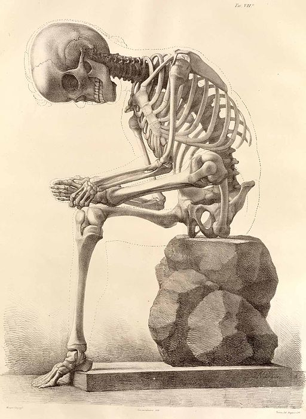
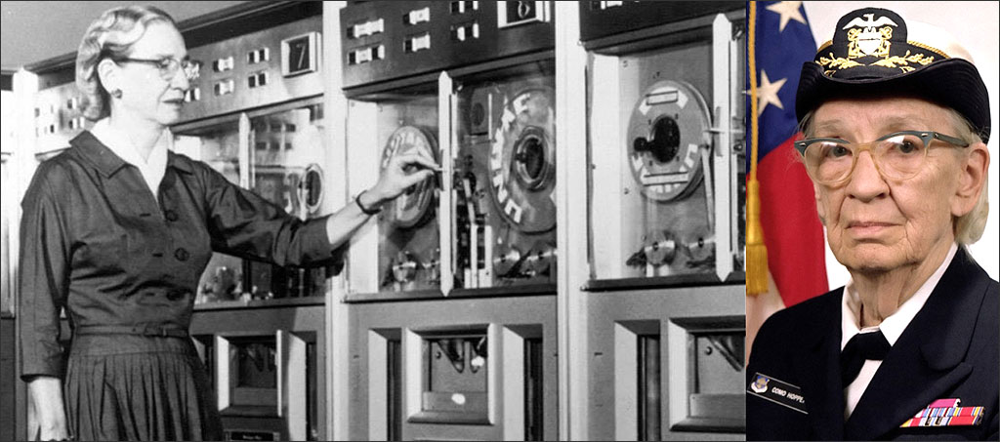

<style>
    .reveal section h1 { text-transform: none; }
    .reveal section sup { font-size: 0.6em; position: relative; top: -1em; }
    .octocat, .slide-image { width: 20rem; }
    .reveal section .dark-bg-header { color: #fff; font-weight: bold; text-shadow: 0.05em 0.05em 0.1em #000; }
    .reveal section .code-site { position: relative; text-align: center; bottom: -2em;  }
    .reveal .code-site:before { content: ""; }
    .reveal section cite { width: 100%; text-align: center; }
</style>

<section data-background='black'>
    <h1 style='color: #fff;'>
        Code.mil: Open Sourcing the DoD
    </h1>
</section>

<section>
    <h1>
        Open Source is good. <sup>[citation needed]</sup>
    </h1>
    
    <p style='color: #333; font-size: 0.9em;'>(This is <strong>not an endorsement</strong> of GitHub!)</p>
</section>

<section>
    <h1>Reusability</h1>
    
</section>

<section>
    <h1>Collaboration and Contribution</h1>
    
</section>

<section>
    <h1>Security</h1>
    
</section>

<section data-background='black'>
    <h1 style='color: #fff;'>Transparency</h1>
    
</section>

<section>
    <h1>For the people...</h1>
    
</section>

<section>
    <h1>If it's so good, why don't they do it?</h1>
    
</section>

<section>
    <h1>Current State and Challenges</h1>
</section>

<section data-background='images/hacking.jpg'>
    <h1 class='dark-bg-header' style='margin-bottom: 5em;'>"OSS is insecure"</h1>
    <cite style='color: #eee'>https://www.flickr.com/photos/thepreiserproject/</cite>
</section>

<section data-background='images/mine.jpg'>
    <h1 class='dark-bg-header' style='margin-bottom: 5em;'>"We paid for it, it's ours."</h1>
    <cite>http://disney.wikia.com/wiki/Seagulls_(Finding_Nemo)</cite>
</section>

<section>
    <h1>"It's illegal"</h1>
    
</section>

<section data-background='#fdefcb'>
    <h1>Set in our ways</h1>
    
    <cite>https://commons.wikimedia.org/wiki/File:III-A-12.jpg</cite>
</section>

<section>
    <h1>Techincal Know-how</h1>
    
    <cite>http://www.doncio.navy.mil/CHIPS/ArticleDetails.aspx?ID=7076</cite>
</section>

<section data-background='#f99'>
    <h1 style='color: #fff;'>Where is the code?</h1>
    
</section>

<section>
    <h1>Enter Code.gov</h1>
    
</section>

<section>
    <h1>I thought you said Code.mil?</h1>
</section>

<section data-background='images/source-code.jpg'>
    <h1 class='dark-bg-header' style='margin-top: -4em;'>Federal Source Code Policy</h1>
</section>

<section>
    <h1>Section 5: Open Source Software</h1>
    <h2 style='text-transform: none;'><a href='https://sourcecode.cio.gov'>sourcecode.cio.gov</a></h2>
</section>

<section>
    
    <h2 class='fragment'>Centralized Information</h2>
    <h2 class='fragment'>Liason to Agencies</h2>
    <h2 class='fragment'>Project Tracking</h2>
</section>

<section data-background='images/code-gov-compliance.png'></section>

<section>
    <h1>So what's Code.mil?</h1>
    <h2 class='fragment'>The DoD is a special snowflake...</h2>
    <p class='fragment'>...or so we think.</p>
</section>

<section data-background='images/code-mil-group.jpg'>
    <h1 style='color: #fff; margin-top: -5em; text-shadow: 0.05em 0.05em 0.1em #000;'>Developed with the F/OSS community</h1>
</section>

<section>
    <h2>Guidelines</h2>
    <h2 class='fragment'>Outreach</h2>
    <h2 class='fragment'>Project Tracking</h2>
    <h2 class='fragment'>Policy Work</h2>
</section>

<section>
    <h1>OSS is happening in the DoD</h1>
    
</section>

<section data-background='black'>
    
    <h1 style='color: #fff;'>Army Research Lab</h1>
    <cite class='code-site' style='color: #444;'>https://github.com/usarmyresearchlab</cite>
</section>

<section>
    
    <cite class='code-site'>https://github.com/nationalsecurityagency</cite>
</section>

<section>
    
</section>

<section>
    
    <cite class='code-site'>https://github.com/deptofdefense</cite>
</section>

<section data-background='#555'>
    
    <h1 style='color: #fff;'>What can you do?</h1>
</section>

<section>
    <h2 style='text-transform: none;'>Code.mil</h2>
    <p style='text-transform: none;'><a href='https://github.com/code-dot-mil/code.mil/'>github.com/code-dot-mil/code.mil</a></p>
</section>

<section data-background='#00b1f2'>
    <h1><a href='mailto:code@dds.mil' style='color: #fff;'>code@dds.mil</a></h1>
    
</section>

<section data-background='images/biden_coding.jpg'>
    <h1 class='dark-bg-header' style=' margin-top: 4em; line-height: 1.5em;'>
        Write some code!<br>Code.gov/#/help-wanted
    </h1>
    <cite class='code-site' style='color: #ddd;'>Official White House Photo by David Lienemann</cite>
</section>

<section data-background='images/help_wanted.png'></section>

<section>
    
    <p><a href='https://usds.gov/join'>usds.gov/join</a></p>
</section>

<section data-background='#f5ffff'>
    <h1 style='text-transform: none;'><a href='https://Code.mil'>Code.mil</a>: Open Sourcing the DoD</h1>

    <a href='https://dds.mil'></a>

    <cite class='code-site'>
        All Octocats liberally sprung from https://octodex.github.com
        <br>
        (This is still <strong>not an endorsement</strong> of GitHub.)
    </cite>
</section>
